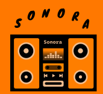

O que é a Sonora?
A Sonora é uma plataforma de música pensada para quem quer ter suas faixas favoritas em um só lugar. O projeto combina uma interface objetiva com recursos essenciais para criar uma experiência musical leve e intuitiva.

A Sonora nasceu para tornar a música mais simples, acessível e agradável. Aqui, a experiência é direta: ouvir, organizar e descobrir músicas sem complicação.
A Sonora é uma plataforma de música pensada para quem quer ter suas faixas favoritas em um só lugar. O projeto combina uma interface objetiva com recursos essenciais para criar uma experiência musical leve e intuitiva.
Oferecer um ambiente organizado para ouvir músicas, montar playlists, salvar favoritos e conhecer novos artistas, mantendo a navegação simples e visualmente marcante.
Porque encontrar a música certa não precisa ser complicado. A ideia é construir uma plataforma que coloque o conteúdo em primeiro lugar, com uma experiência rápida e fácil de entender.
Clareza, simplicidade, criatividade e conexão. Cada parte da Sonora foi pensada para que a música seja a protagonista.